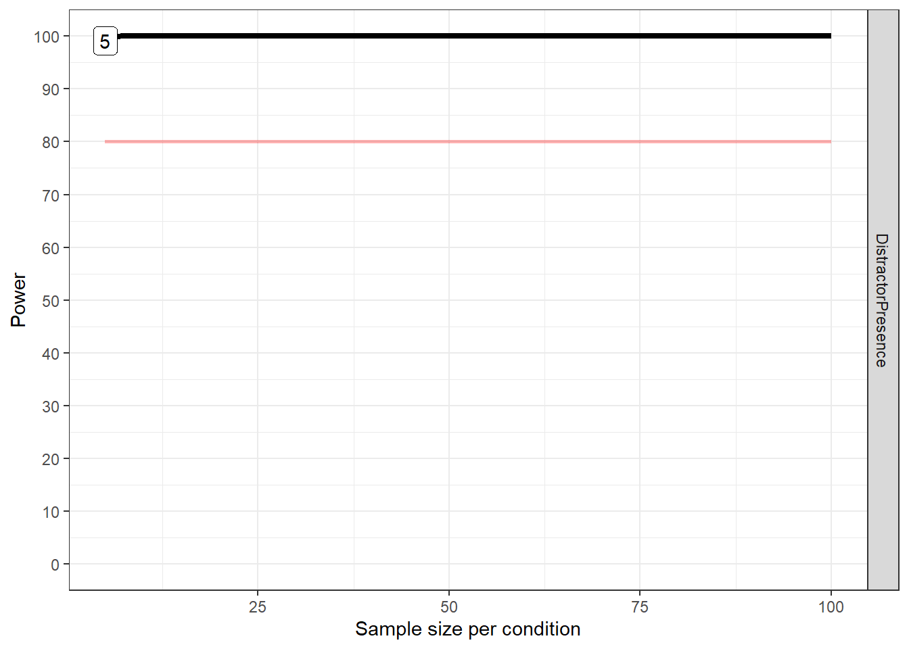
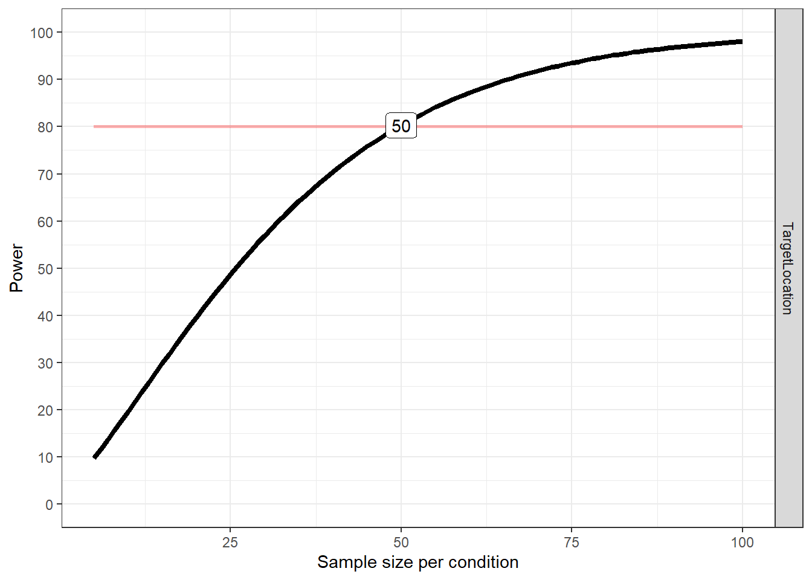
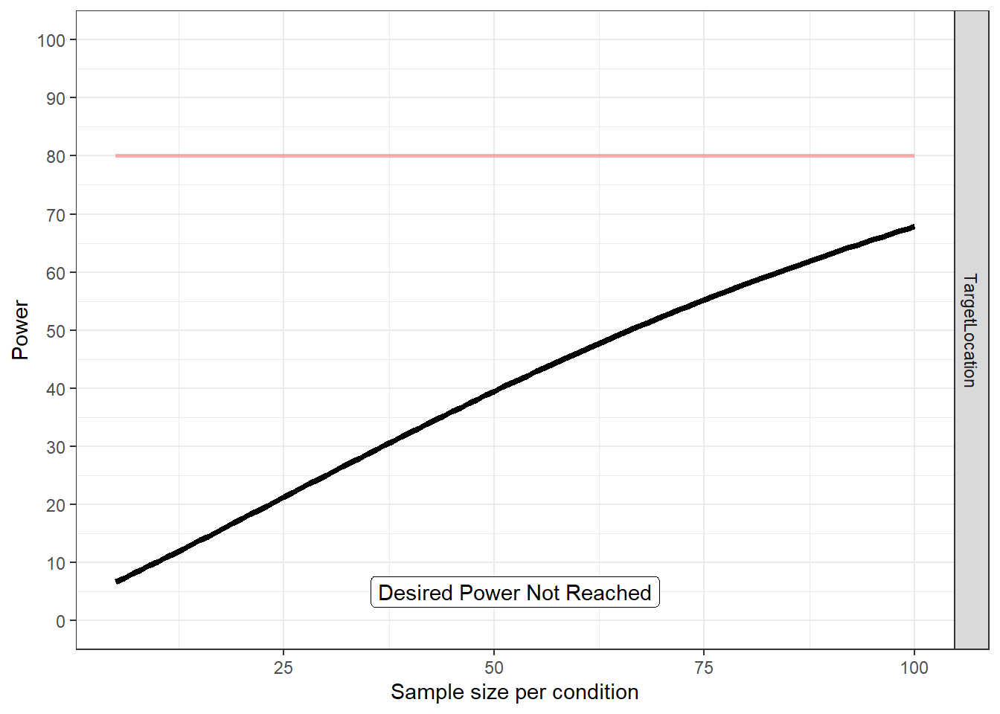
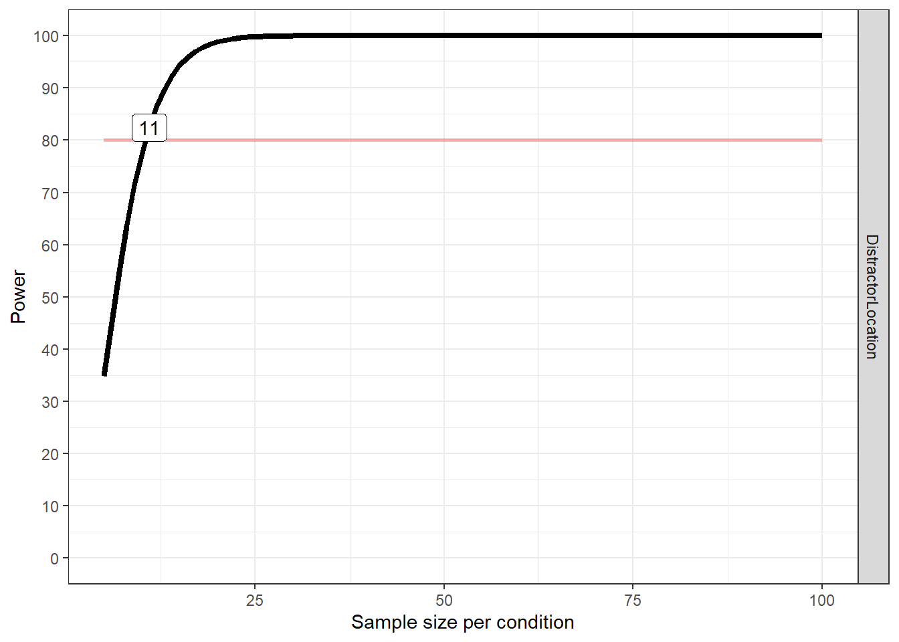
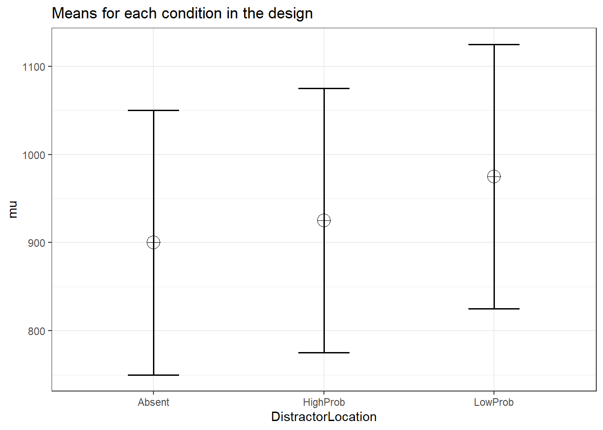
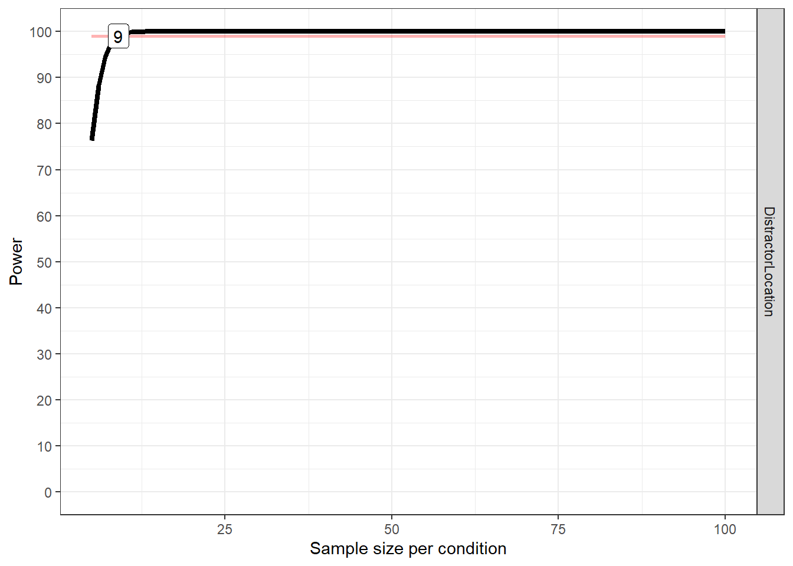
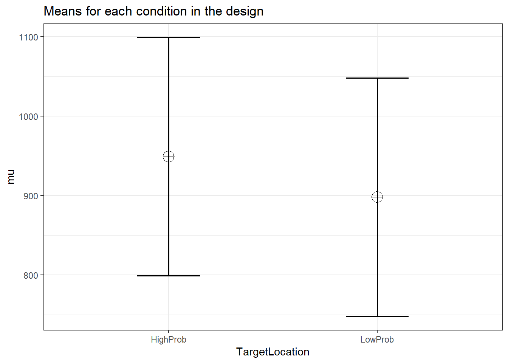
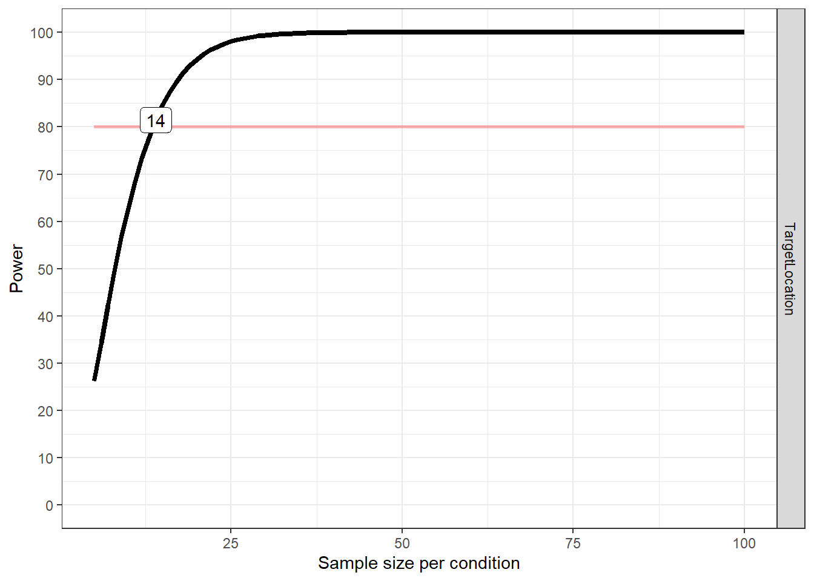

Portfolio 5
03.07.2023
Goal: Determine the number of participants needed for 80% power. Data: Pilot study on distractor suppression in adults
library(Superpower)
library(data.table)
library(emmeans)
library(tidyverse)
library(tidyr)Instructions from the package are here: https://cran.r-project.org/web/packages/Superpower/vignettes/intro_to_superpower.html#anova_design-function
Set up the design. In this package, we need to choose the right design (we have a single variable with 3 groups), input the number of participants, means of each group, standard deviation (I chose the highest of the 3 groups), the correlations between the 3 groups, and the label names. This first one is for the distractor location response times.
young_design <- ANOVA_design(design = "3w",
n=21,
mu = c(780.8287, 861.8318, 917.4635),
sd = 152,
r <- c(0.9603,0.9479,0.9434),
labelnames = c("DistractorPresence", "DistAbsent", "HighProb", "LowProb")
)
Plot power as a function of sample size.
plot_power(young_design, min_n=5, max_n = 100, desired_power=80, exact2 = TRUE)
## Achieved Power and Sample Size for ANOVA-level effects
## variable label n achieved_power desired_power
## 1 DistractorPresence Desired Power Achieved 5 99.13 80Run a power simulation based on the N defined above. Here we can play around with the alpha level.
results=ANOVA_power(design_result = young_design,alpha_level = 0.001, nsims = 10000, seed=1234,)## Power and Effect sizes for ANOVA tests
## power effect_size
## anova_DistractorPresence 100 0.8126
##
## Power and Effect sizes for pairwise comparisons (t-tests)
## power effect_size
## p_DistractorPresence_DistAbsent_DistractorPresence_HighProb 99.99 1.957
## p_DistractorPresence_DistAbsent_DistractorPresence_LowProb 100.00 2.892
## p_DistractorPresence_HighProb_DistractorPresence_LowProb 84.47 1.129
##
##
## Within-Subject Factors Included: Check MANOVA ResultsRun correlations that we’ll use in the design.
Distractor location response times
pilot <- read_csv("p01/p01/data/pilot_final.csv", show_col_types = FALSE)## New names:
## • `` -> `...1`pilot$relative_hp_dist[pilot$relative_hp_dist == 10] <- "no_dist"
pilot$relative_hp_dist[pilot$relative_hp_dist == 0] <- "dist_0"
pilot$relative_hp_dist[pilot$relative_hp_dist == 1] <- "dist_1"
pilot$relative_hp_dist[pilot$relative_hp_dist == 2] <- "dist_2"
pilot$relative_hp_dist[pilot$relative_hp_dist == 3] <- "dist_3"
pilot$RT <- pilot$RT *1000
block_num <- rep(c(1,2,3,4,5,6,7,8), each=60, times=21)
pilot <- cbind(pilot, block_num)
xsize <- c(4, 5, 6, 7, 8, 9, 10, 11, 12, 13, 14, 15, 20,
25, 30, 35, 50, 100)
stds <- c(1.458, 1.68, 1.841, 1.961, 2.05, 2.12, 2.173,
2.22, 2.246, 2.274, 2.31, 2.326, 2.391, 2.41, 2.4305,
2.45, 2.48, 2.5)
trimmed <- pilot[pilot$acc==100, ] %>% group_by(ID, relative_hp_dist) %>%
mutate(sdc = ifelse(length(RT)>=100,2.5,approx(xsize,stds,xout=length(RT))$y), avg = mean(RT), stdev = sd(RT)) %>%
filter(RT <= sdc*stdev+avg & RT >=avg-(sdc*stdev) & RT >=.200) %>%
select(ID, relative_hp_dist, RT, block_num) %>% #keep these columns in the new data frame
as.data.frame()
statPrep <- trimmed %>% group_by(ID, relative_hp_dist) %>% summarise(measurement=mean(RT)) %>% as.data.frame()## `summarise()` has grouped output by 'ID'. You can override using
## the `.groups` argument.100-(nrow(trimmed)/nrow(pilot[pilot$acc==100, ]))*100## [1] 2.509732space <- trimmed %>%
group_by(ID, relative_hp_dist) %>%
summarize(rts = mean(RT)
)## `summarise()` has grouped output by 'ID'. You can override using
## the `.groups` argument.space_anova <- setDT(space)
space_anova <- dcast(space_anova,ID~relative_hp_dist,value.var='rts')
space_anova <- space_anova %>%
mutate(low_prob = (dist_1+dist_2+dist_3)/3)cor(space_anova$dist_0, space_anova$low_prob)## [1] 0.9433834cor(space_anova$dist_0, space_anova$no_dist)## [1] 0.9603064cor(space_anova$no_dist, space_anova$low_prob)## [1] 0.9478615Target Location Response Times
pilot <- read_csv("p02/pilot_final.csv", show_col_types = FALSE)## New names:
## • `` -> `...1`pilot$relative_hp_dist[pilot$relative_hp_dist == 10] <- "no_dist"
pilot$relative_hp_dist[pilot$relative_hp_dist == 0] <- "dist_0"
pilot$relative_hp_dist[pilot$relative_hp_dist == 1] <- "dist_1"
pilot$relative_hp_dist[pilot$relative_hp_dist == 2] <- "dist_2"
pilot$relative_hp_dist[pilot$relative_hp_dist == 3] <- "dist_3"
pilot$RT <- pilot$RT *1000
block_num <- rep(c(1,2,3,4,5,6,7,8), each=60, times=21)
pilot <- cbind(pilot, block_num)
pilot <- pilot %>%
mutate(relative_target=
case_when(target_loc=="loc1" & high_prob==1 ~ 0,
target_loc=="loc2" & high_prob==1 ~ 1,
target_loc=="loc3" & high_prob==1 ~ 2,
target_loc=="loc4" & high_prob==1 ~ 3,
target_loc=="loc5" & high_prob==1 ~ 2,
target_loc=="loc6" & high_prob==1 ~ 1,
target_loc=="loc1" & high_prob==2 ~ 1,
target_loc=="loc2" & high_prob==2 ~ 0,
target_loc=="loc3" & high_prob==2 ~ 1,
target_loc=="loc4" & high_prob==2 ~ 2,
target_loc=="loc5" & high_prob==2 ~ 3,
target_loc=="loc6" & high_prob==2 ~ 2,
target_loc=="loc1" & high_prob==3 ~ 2,
target_loc=="loc2" & high_prob==3 ~ 1,
target_loc=="loc3" & high_prob==3 ~ 0,
target_loc=="loc4" & high_prob==3 ~ 1,
target_loc=="loc5" & high_prob==3 ~ 2,
target_loc=="loc6" & high_prob==3 ~ 3,
target_loc=="loc1" & high_prob==4 ~ 3,
target_loc=="loc2" & high_prob==4 ~ 2,
target_loc=="loc3" & high_prob==4 ~ 1,
target_loc=="loc4" & high_prob==4 ~ 0,
target_loc=="loc5" & high_prob==4 ~ 1,
target_loc=="loc6" & high_prob==4 ~ 2,
target_loc=="loc1" & high_prob==5 ~ 2,
target_loc=="loc2" & high_prob==5 ~ 3,
target_loc=="loc3" & high_prob==5 ~ 2,
target_loc=="loc4" & high_prob==5 ~ 1,
target_loc=="loc5" & high_prob==5 ~ 0,
target_loc=="loc6" & high_prob==5 ~ 1,
target_loc=="loc1" & high_prob==6 ~ 1,
target_loc=="loc2" & high_prob==6 ~ 2,
target_loc=="loc3" & high_prob==6 ~ 3,
target_loc=="loc4" & high_prob==6 ~ 2,
target_loc=="loc5" & high_prob==6 ~ 1,
target_loc=="loc6" & high_prob==6 ~ 0,))
pilot$relative_target[pilot$relative_target == 0] <- "high_prob"
pilot$relative_target[pilot$relative_target == 1] <- "lp_1"
pilot$relative_target[pilot$relative_target == 2] <- "lp_2"
pilot$relative_target[pilot$relative_target == 3] <- "lp_3"
add_this<- pilot[pilot$acc==100,]
trimmed <- add_this[add_this$relative_hp_dist=="no_dist",] %>%
group_by(ID, relative_target) %>%
mutate(sdc = ifelse(length(RT)>=100,2.5,approx(xsize,stds,xout=length(RT))$y), avg = mean(RT), stdev = sd(RT)) %>%
filter(RT <= sdc*stdev+avg & RT >=avg-(sdc*stdev) & RT >=.200) %>%
select(ID, relative_hp_dist, RT, block_num, relative_target) %>%
as.data.frame()
statPrep <- trimmed %>% group_by(ID, relative_target) %>% summarise(measurement=mean(RT)) %>% as.data.frame()## `summarise()` has grouped output by 'ID'. You can override using
## the `.groups` argument.100-(nrow(trimmed)/nrow(add_this[add_this$relative_hp_dist=="no_dist",]))*100## [1] 2.694489space <- trimmed %>%
subset(relative_hp_dist=="no_dist")%>%
group_by(ID, relative_target) %>%
summarize(rts = mean(RT),
)## `summarise()` has grouped output by 'ID'. You can override using
## the `.groups` argument.space_anova <- setDT(space)
space_anova <- dcast(space_anova,ID~relative_target,value.var='rts')
space_anova <- space_anova %>%
mutate(low_prob = (lp_1+lp_2+lp_3)/3)cor(space_anova$high_prob, space_anova$low_prob)## [1] 0.9191481Run the design for the target response times and plot.
young_design <- ANOVA_design(design = "2w",
n=21,
mu = c(796.9622, 777.3374),
sd = 120,
r <- c(0.9191),
labelnames = c("TargetLocation", "HighProb", "LowProb")
)
plot_power(young_design, min_n=5, max_n = 100, desired_power=80, exact2 = TRUE)
## Achieved Power and Sample Size for ANOVA-level effects
## variable label n achieved_power desired_power
## 1 TargetLocation Desired Power Achieved 50 80.31 80results=ANOVA_power(design_result = young_design,alpha_level = 0.05, nsims = 10000, seed=1234,)## Power and Effect sizes for ANOVA tests
## power effect_size
## anova_TargetLocation 42.76 0.1732
##
## Power and Effect sizes for pairwise comparisons (t-tests)
## power effect_size
## p_TargetLocation_HighProb_TargetLocation_LowProb 42.76 -0.4214
##
##
## Within-Subject Factors Included: Check MANOVA ResultsNow, we’ll take a look at the distractor and target location accuracy data. First, we’ll find the correlations between the groups for each.
pilot_distacc <- pilot %>%
group_by(relative_hp_dist) %>%
summarize(accuracy = mean(acc),
sd_rt=sd(acc),
n_rt=21,
se=sd_rt/sqrt(n_rt),
upper_limit=accuracy+se,
lower_limit=accuracy-se
)
pilot_targacc <- pilot %>%
subset(relative_hp_dist=="no_dist")%>%
group_by(relative_target) %>%
summarize(accuracy = mean(acc),
sd_rt=sd(acc),
n_rt=21,
se=sd_rt/sqrt(n_rt),
upper_limit=accuracy+se,
lower_limit=accuracy-se
)
pilot_dist <- pilot %>%
group_by(ID, relative_hp_dist) %>%
summarize(accuracy = mean(acc)
)## `summarise()` has grouped output by 'ID'. You can override using
## the `.groups` argument.pilot_targ <- pilot %>%
subset(relative_hp_dist=="no_dist")%>%
group_by(ID, relative_target) %>%
summarize(accuracy = mean(acc)
)## `summarise()` has grouped output by 'ID'. You can override using
## the `.groups` argument.dist_t <- setDT(pilot_dist)
dist_t <- dcast(pilot_dist,ID~relative_hp_dist,value.var='accuracy')
dist_t <- dist_t %>%
mutate(low_prob = (dist_1+dist_2+dist_3)/3)
targ_t <- setDT(pilot_targ)
targ_t <- dcast(pilot_targ,ID~relative_target,value.var='accuracy')
targ_t <- targ_t %>%
mutate(low_prob = (lp_1+lp_2+lp_3)/3)cor(dist_t$dist_0, dist_t$low_prob)## [1] 0.8298762cor(dist_t$dist_0, dist_t$no_dist)## [1] 0.7518681cor(dist_t$no_dist, dist_t$low_prob)## [1] 0.606431cor(targ_t$high_prob, targ_t$low_prob)## [1] 0.4826907Run the design for target accuracy.
targacc_design <- ANOVA_design(design = "2w",
n=21,
mu = c(97.38095, 98.0754),
sd = 2.79,
r <- c(0.48269),
labelnames = c("TargetLocation", "HighProb", "LowProb")
)
plot_power(targacc_design, min_n=5, max_n = 100, desired_power=80, exact2 = TRUE)
## Achieved Power and Sample Size for ANOVA-level effects
## variable label n achieved_power desired_power
## 1 TargetLocation Desired Power Not Reached 100 67.84 80Run the design for distractor accuracy.
distacc_design <- ANOVA_design(design = "3w",
n=21,
mu = c(97.93651, 96.12528, 94.7586),
sd = 4,
r <- c(0.75187, 0.60643, 0.82988),
labelnames = c("DistractorLocation", "Absent", "HighProb", "LowProb")
)
plot_power(distacc_design, min_n=5, max_n = 100, desired_power=80, exact2 = TRUE)
## Achieved Power and Sample Size for ANOVA-level effects
## variable label n achieved_power desired_power
## 1 DistractorLocation Desired Power Achieved 11 82.44 80Now, find power using data from Wang and Theeuwes (2018). Response times used here were estimated from plots in the paper.
theeuwes_dist_design <- ANOVA_design(design = "3w",
n=20,
mu = c(900, 925, 975),
sd = 150,
r <- c(0.96, 0.96, 0.96),
labelnames = c("DistractorLocation", "Absent", "HighProb", "LowProb")
)
plot_power(theeuwes_dist_design, min_n=5, max_n = 100, desired_power=99, exact2 = TRUE)
## Achieved Power and Sample Size for ANOVA-level effects
## variable label n achieved_power desired_power
## 1 DistractorLocation Desired Power Achieved 9 99.04 99theeuwes_targ_design <- ANOVA_design(design = "2w",
n=20,
mu = c(949, 898),
sd = 150,
r <- c(0.92),
labelnames = c("TargetLocation", "HighProb", "LowProb")
)
plot_power(theeuwes_targ_design, min_n=5, max_n = 100, desired_power=80, exact2 = TRUE)
## Achieved Power and Sample Size for ANOVA-level effects
## variable label n achieved_power desired_power
## 1 TargetLocation Desired Power Achieved 14 81.47 80